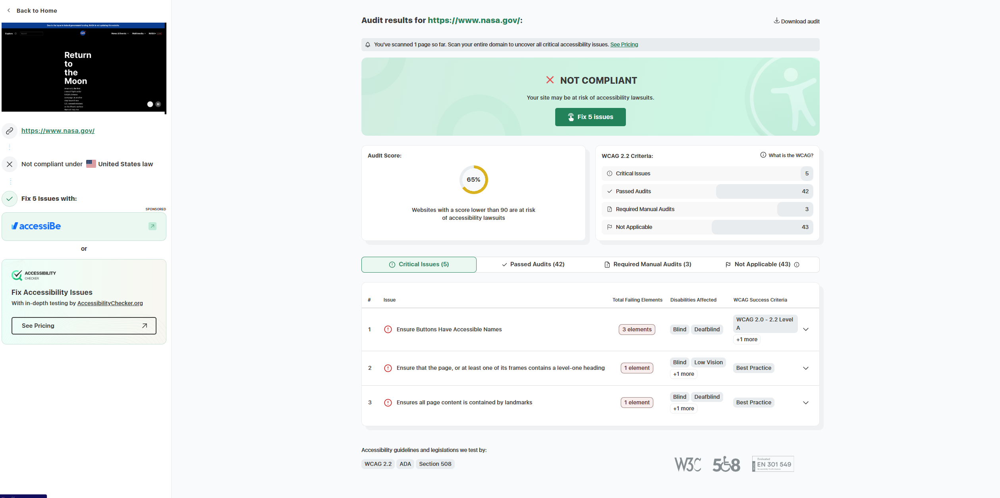

NASA : National Aeronautics and Space Administration
3. Who is the site's target audience?
NASA.gov is meant for a wide range of people. This includes students, teachers, scientists, and people working in aerospace, but also regular visitors who are just curious about space.
Basically, anyone interested in space missions, new discoveries, or space education would find something valuable here.
4. How is the site organized?
The site is structured with a main menu at the top that includes sections like Missions,Return to the Moon, News & Events, Multimedia, and more. Many of the sections have dropdowns so you can quickly jump
into specific topics. The homepage highlights big missions, live streams, and trending news, which makes it easy to spot what's currently happening at NASA. It feels organized and easy
to explore without getting lost.
User Experience & Accessibility Evaluation
5. Which CRAP design principle does the site use? Provide an example.
Contrast : NASA.gov mainly shows good use of Contrast. For example, the site uses white text on dark backgrounds and bright buttons for important links. This makes it easier to read and immediately tells
your eyes where to focus. The contrast also helps people with low vision by making text and buttons stand out more clearly.
6. What is the site's effectiveness?
The website is very effective at communicating NASA's mission and providing accurate space-related information. You can find mission updates, watch live rocket launches, explore space photos, and read official
announcements. Everything feels reliable and educational, and it supports NASA's goal of informing the public about space exploration and science.
7. What is the site's efficiency?
NASA.gov demonstrates strong efficiency in helping users find and interact with content. The site's search tool provides fast, relevant results, while clearly labeled navigation menus and well-organized
categories for missions, media, news, and research support smooth browsing. Logical content grouping and large, easily clickable elements further streamline user tasks and reduce effort. However, efficiency
may be slightly reduced for screen-reader users due to occasional missing accessible button labels and inconsistent heading structures, indicating room for improvement in accessibility-related usability.
8. How is the engagement?
Engagement on NASA.gov is exceptionally high, driven by its visually compelling space photography and video content, interactive learning tools, and detailed mission dashboards. Live broadcasts of launches and
major events further draw users in, creating real-time excitement and participation. The site's modern layout and multimedia-rich storytelling help immerse visitors in NASA's missions and discoveries. Overall,
the platform effectively maintains user interest and delivers an inspiring experience that aligns closely with NASA's mission and public identity.
Accessibility Audit Results
9. What is the Audit Score according to the Accessibility Checker?
65% : Not fully compliant. NASA.gov currently receives an accessibility audit score of 65%, placing it in a "Not Compliant" range. The evaluation identifies five critical issues and notes that three areas require
manual review. Several elements lack proper accessibility names and landmark structure, which can hinder screen-reader navigation and inclusive use. With a score below 90%, the site may face potential usability
challenges and legal exposure under accessibility standards such as ADA and Section 508.
10. Recommendation for improvement
To improve accessibility and enhance overall user experience, NASA.gov should implement several key adjustments. Adding accessible names to interactive buttons will ensure clearer screen-reader interpretation,
while maintaining consistent level-one headings across pages will strengthen page hierarchy and orientation. Additionally, placing all content within proper semantic HTML landmarks will support smoother navigation
for users relying on assistive technologies. These enhancements would significantly improve compliance with WCAG 2.2, ADA, and Section 508 standards, ensuring equitable access for users with visual or cognitive disabilities.
Audit Screenshot

Accessibility audit of NASA.gov using WCAG testing tool